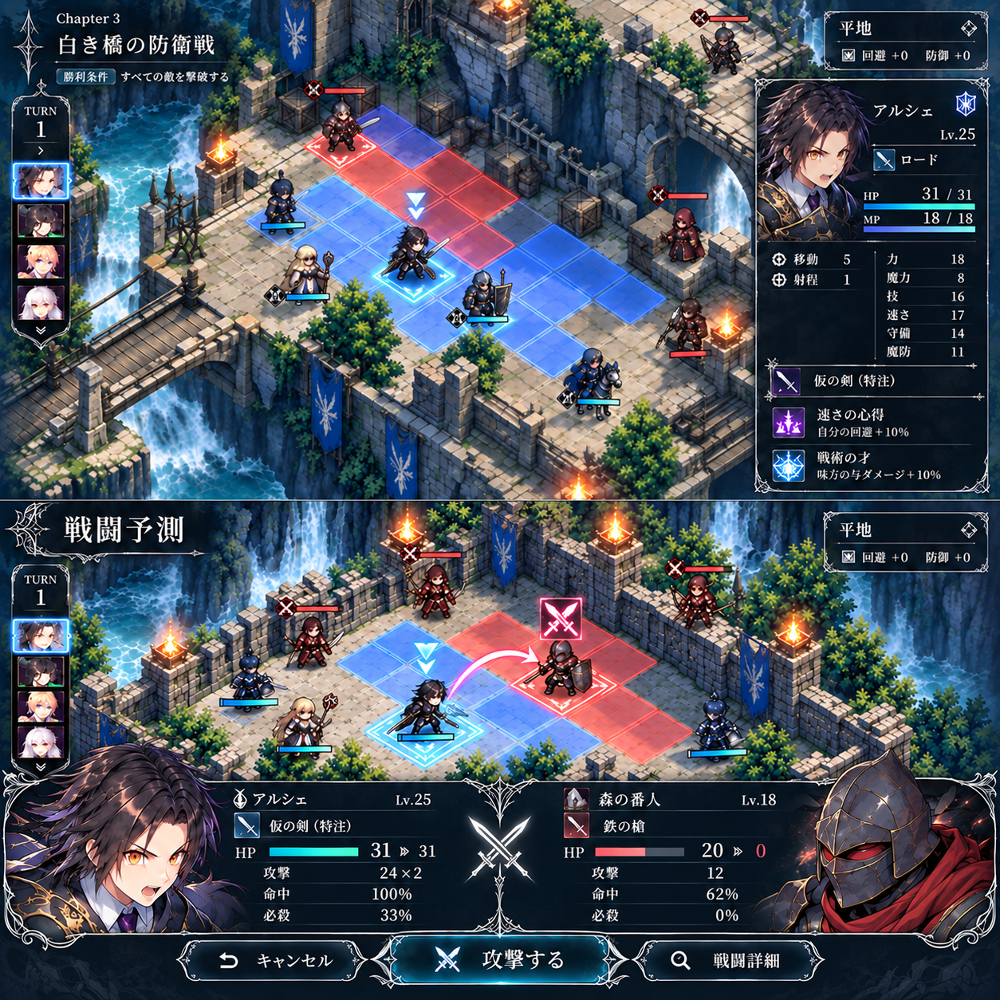
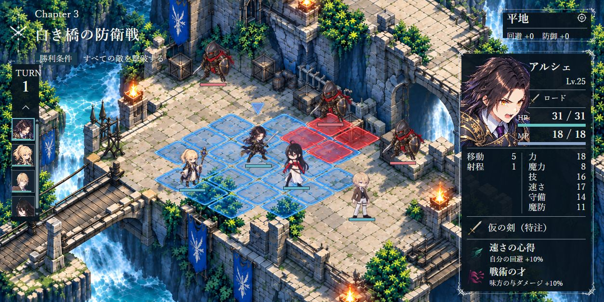
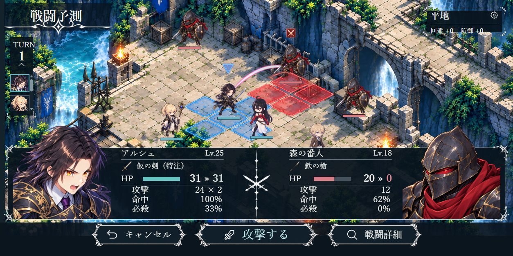

<!doctype html><html lang="ja"><meta charset="utf-8"><title>銀細工UI — 参照との比較</title><style>
body{margin:0;background:#15212a;color:#e8ecec;font-family:serif}header{padding:14px 20px;font-size:16px}main{display:grid;grid-template-columns:1fr 1fr;gap:12px;padding:0 12px 12px}figure{margin:0;overflow:hidden}figcaption{font-size:14px;padding:10px 0}.ref{position:relative;width:100%;aspect-ratio:2/1;overflow:hidden}.ref img{position:absolute;width:100%;left:0;top:0}.ref.bottom img{top:-100%}.shot{width:100%;display:block}h2{font-size:18px;margin:15px}section{grid-column:1/-1;display:grid;grid-template-columns:1fr 1fr;gap:12px}.focus{aspect-ratio:4/1;overflow:hidden;position:relative}.focus img{position:absolute;width:100%;bottom:0}
</style><header>原作者が選んだ添付画像 / HTML実装 — 同じ1254×627、上下2状態</header><main>
<figure><figcaption>参照 / 通常</figcaption><div class="ref"></div></figure>
<figure><figcaption>実装 / 通常</figcaption></figure>
<figure><figcaption>参照 / 予測</figcaption><div class="ref bottom"></div></figure>
<figure><figcaption>実装 / 予測</figcaption></figure>
<section><figure><figcaption>予測の顔グラ・数値・ボタン（参照）</figcaption><div class="focus"></div></figure><figure><figcaption>同じ範囲（実装）</figcaption><div class="focus"></div></figure></section>
</main></html>
